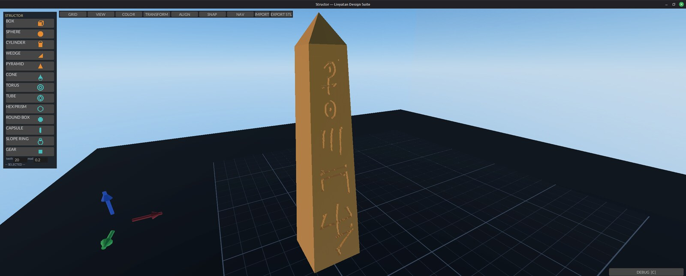

STRUCTOR
Structor was the Roman architect and engineer whose De architectura is the oldest surviving work on the discipline — the book that gave design its three tests: firmitas, utilitas, venustas — soundness, usefulness, beauty. A CAD module that exists to design real parts for a real shop takes the name of the man who first wrote down what a design owes the person who builds from it.
CAD, sovereign. Solids in, drawings out.
Debian 13 / Ubuntu 24.04+ — install with sudo apt install ./structor_0.11.0_amd64.deb
All modules and docs: https://github.com/3DJ77/Livyatan

Structor — Operator Manual
Quickstart
sudo apt install ./structor_0.11.0_amd64.deb
structorClick a palette button (top-left) — BOX / SPHERE / CYLINDER / WEDGE /
PYRAMID — to drop a solid on the plate. New parts (and the cube a fresh
scene opens with) arrive at one inch, 25.4 mm; GEAR is sized by its
teeth and module. Left-drag moves it; rings rotate; grab the
bounding-box handles to scale (corners = uniform, faces = one axis).
EXPORT STL writes the scene to STL.
SAVE (Ctrl+S) writes a .SigN file,
OPEN (Ctrl+O) loads one — both through the file dialog,
default folder ~/Structor.
What it is
Structor is the design module of the Livyatan Design Suite: a sovereign, local-first CAD program in Rust on fyrox. It is an alternative to online cloud-based CAD platforms — drop primitive solids on a build plate, drag/rotate/scale them with gizmos, mark negatives as holes, group and boolean-merge, then export the resolved solid to a watertight STL. No browser, no cloud, no account, no network. Everything runs on the local machine.
The scene is a tree of shapes that maps 1:1 onto a JSON-CSG grammar,
so a saved .SigN file is a readable spec, not an opaque
blob. Boolean preview and merge use the manifold engine — the same
backend OpenSCAD uses — so what you preview is what the export
produces.
The installed binary is /usr/bin/structor. 85 in-crate
tests (cargo test); the camera/spacemouse canon tests live
in the vendored chimaera crate.
Why the name
Structor is Latin for builder — the worker who raises the structure, and the root the word “structure” itself grew from. In Rome a structor was the tradesman on the wall, not the patron with the drawings: the one whose hands had to make the plan true. A CAD module that exists to design real parts for a real shop takes the builder’s name, not the architect’s.
Features
- Palette primitives — BOX, SPHERE, CYLINDER, WEDGE, PYRAMID spawn at the nearest free grid cell; shape-glyph icon buttons.
- SCAD template shapes — CONE, TORUS, TUBE, HEX PRISM, ROUND BOX, CAPSULE, SLOPE RING, GEAR (real computed involute flanks; teeth/module/face-width inputs — same module + different teeth = gears that mesh). Shapes are built natively in-process (no external programs) and land as grab-editable meshes.
- Gizmos — move arrows, rotate rings (22.5° snap with degree compass), bounding-box scale handles: 8 corners = uniform, 6 faces = single axis, opposite point anchored, Esc restores exactly.
- Multi-select — Shift+click or Ctrl+click builds a set; Ctrl+A selects all; the set body-drags rigidly with the gizmo at the centroid (move only).
- Groups and merge — Ctrl+G: solids-only = logical group; solid+hole = applies the boolean into one merged part (manifold CSG — OpenSCAD’s own engine). Ctrl+U ungroups/un-merges. Ctrl+W welds any 2+ selected parts into one polyhedron regardless of hole mix. Non-manifold parts fail LOUD (“MERGE FAIL: n part(s) not manifold”), never silently dropped.
- Holes — H toggles solid↔︎hole; P previews the whole-scene boolean non-destructively.
- Snap — grid snap (GRID picker .1/.25/.5/1/5), SMART surface snap (parts ride up onto parts), feature-point snap (corners/face-centers/cap-cardinals, Ctrl suppresses), and Pin Snap: armed mode places exact operator-chosen surface points that persist in the file and ride transforms.
- Color — own-drawn HSV color wheel + value bar,
PAINT arm mode, 8-preset row; colors persist in
.SigN. - Mirror — MIR X/Y/Z in the TRANSFORM menu, about combined-bounds center.
- Align — X/Y/Z × min/mid/max grid with multi-selection, against combined bounds or a picked reference part.
- Undo/redo — snapshot history, checkpoint at every mutation; UNDO / REDO buttons carry the depth, Ctrl+Z / Ctrl+Y.
- Parts outliner (2026-09-05) — the list under the palette: one row per part, the dot hides/shows it (same as HIDE), the name selects it.
- Type on spawn — a palette click leaves the keyboard
in the new part’s first dimension field:
50 Tab 20 Tab 3 Enter. - Title bar —
Structor — bracket.SigN *, the star while unsaved. Closing with unsaved changes writes the autosave first, then asks whether to save to the scene’s file. - REST — drops the selection’s base onto the plate; with two parts picked the last-clicked one stacks on the other.
- FIT ALL (H with nothing selected) — frames every
part; Home is still the home view. MEASURE — click two
points on parts, read the distance (and the X/Y/Z legs) on the status
line; Esc exits. RECENT — the last five scenes plus the
autosave. UNITS on the toolbar — the inspector, readout
and MEASURE follow it (rotations stay degrees). The status line reads
the selection
(
BOX 3 · 25.40 × 25.40 × 25.40 mm · 2 hidden), the part under the cursor lights up, and the wheel zooms toward the cursor. - Look (2026-09-05) — Solarized dark is the suite palette (every module, one shared crate); toolbar faces carry the verb only, the chord and the sentence are in the hover tooltip; the toolbar centres on the window; the size/position inspector sits on the right; every shape is on the palette (no MORE drawer) with a rendered icon of the part; the colour wheel paints the selected part live; a fill light and ambient lift keep the shadow side readable; the shop backdrop’s aisle runs straight behind the plate.
- PLATE clear keeps the grid (2026-09-05): the grid is its own lines-only sheet when the plate is hidden. HOME and FIT ALL always return the camera from a SpaceMouse fly to orbit (the “zoom won’t re-lock” report).
- Photo domes — SHOP / HILLS / SPACE in the VIEW menu are the older backdrops: an equirect panorama on a sphere around the plate, self-lit, the ground slab hidden while one is up. Where the sphere sits relative to the plate is the operator’s placement (MAGIC CARPET / BG LEVEL below); the shipped defaults are the numbers placed by the author on 2026-09-05.
- Text + / Text − — UI text scale for every Livyatan
module, saved to
~/.config/livyatan/ui-scale; restart to apply. - The backdrop is a level, the plate is the ship
(2026-09-05). The backdrop sphere has a full placement —
position and yaw/pitch/roll — around the plate. MAGIC
CARPET (DEBUG pane) hands the SpaceMouse to the backdrop: tilt
= glide it forward/back and sideways, push/pull = up/down, twist = yaw,
Shift+tilt = pitch/roll, Alt = fast. VIEW → BG LEVEL
does the same without the puck (FWD BACK LEFT RIGHT UP DOWN, YAW PITCH
ROLL, RESET) and shows the live numbers. The placement locks per
backdrop to
~/.config/structor/backdrop.jsonwhen the window closes (and when the carpet is switched off) and comes back next launch;SIG_BG_X/Y/Z/YAW/PITCH/ROLLset the launch defaults. Copy/paste with Ctrl+C/Ctrl+V. - Import — STL (binary+ASCII) and OBJ via the IMPORT
button (zenity dialog) or
SIG_IMPORT=<path>at launch; meshes are welded, normalized, and grab-editable; imported-mesh dims (X/Y/Z, display order — 2026-08-31) live in the inspector and are per-axis (2026-09-04): typing W, H or D scales only that axis, the other two hold, and the part’s pins ride the same scale. - Export — EXPORT STL via zenity save dialog.
- Save/load — SAVE / Ctrl+S writes
.SigN(JSON-CSG: units, solids, colors, pins, groups, fab tags) through a save dialog the first time and silently to the same file after; OPEN / Ctrl+O loads one (undoable). Default folder~/Structor.SIG_OPEN=<path>still loads at launch. - Autosave — once a minute, only when the scene
changed, to
~/Structor/autosave.SigN; the status line says so. A previous session’s autosave is announced in the DEBUG feed at launch — OPEN it if you need it. - Hide — HIDE removes the selection (and its group) from the viewport and from picking; SHOW ALL restores. Hidden parts stay in the tree, the P preview and every export — hiding is a view, not a delete.
- Z datum — the inspector’s Z row is the part’s BASE, so Z = 0 rests it on the plate (the centre is what moves; the ruler’s Z leg reads the same base).
- Environments — VIEW menu. SHOP 3D (the launch view), HILLS 3D and SPACE 3D are levels: real geometry at 1 mm units — a 30 m shop bay with the build plate lying on a granite surface-plate inspection bench and a bridge crane under the trusses, open ground under the hills sky, a station bay with a planet through the hatch — so the view keeps true perspective from any angle. SHOP / HILLS / SPACE are the older skydome wallpapers. BG LEVEL / MAGIC CARPET move whichever is up. Stay inside a level’s walls: orbiting out past them shows the sky through the back of the wall.
- SpaceMouse — direct hidraw driver (no daemon), full
6-axis nav with the CHIMAERA shared-feel system: every
sign/source/sensitivity is user data in
~/.config/structor/nav.json, edited live in the NAV panel. - Wheel/pan canon — all wheel and pan input routes through one seam each, ground-truthed to operator hands (scroll up = camera away; grab-the-world pan, correct at every yaw).
- Attitude triad — lower-left mini axes glued to the camera; click aligns the view down that axis, re-click flips sides.
- Z-up display language — every UI surface (inspector, ruler, menus) speaks Z-up like a machinist expects; the scene stays Y-up internally.
Using it
Place and edit solids. Click a palette button; the part lands on a free grid cell. Click to select (repeat-click cycles overlapping parts). Left-drag moves on the workplane with grid + surface snap; arrows nudge by the grid step (Shift ×5, Ctrl+Shift+Up/Down raises/lowers). Type exact values in the left inspector; Enter commits. Drag a ring to rotate (compass shows the snapped angle; ROT° box in TOOLS applies typed degrees). Drag a corner handle for uniform scale, a face handle for one axis — it grows toward you, Esc puts everything back. T opens the TOOLS panel: GRID step, TRANSFORM (scale/rotate ±90°/mirror), ALIGN, SNAP, colors, backdrops.
Booleans. Select a part, press H to mark it a hole. P previews the cut without committing. Select the hole plus its solids and Ctrl+G to apply the boolean — the result is one merged, still-editable part; Ctrl+U brings the sources back. Ctrl+W welds any multi-selection into one part in a single stroke.
Save and export. SAVE / Ctrl+S writes
.SigN (dialog on the first save, default
~/Structor/, then silently to that file); OPEN / Ctrl+O
loads one. EXPORT STL in the toolbar opens a save dialog (defaulting to
~/Desktop) and writes the boolean-resolved solid — exactly
what the P preview shows — as binary STL. Any part that is not manifold
is named in the status line and excluded from the merge rather than
silently dropped.
Navigate. Right-drag or left-drag empty space =
orbit. Middle-drag = pan (the scene follows the cursor). Wheel = zoom
(scroll up backs the camera away). WASD pans the view. Home (or H with
nothing selected) = home view. With the SpaceMouse: tilt = fly,
push/pull = lift, twist = yaw. Hold Shift for the
attitude layer — tilt L/R = roll, tilt F/B = pitch, fly gated off. Hold
L-Alt to boost fly speed (SIG_FLY_BOOST,
default 6×). Left puck button = home.
The NAV panel. If any axis feels backwards, don’t
relaunch with env flips — open the NAV panel and fix it there:
per-function sign flips, gesture-source reassignment, puck sensitivity,
fly speed, and the mouse feel block (orbit/zoom/ pan sens + direction).
Every click writes ~/.config/structor/nav.json. Load order:
baked default ← nav.json ← SIG_* env (env wins, as launch
trim).
The DEBUG pane. Edge tab or C opens it; drag the left grab bar to resize. The feed (newest first) records every status transition — imports, exports, merges, welds — and is copyable with Ctrl+C. UNITS toggles mm/in display.
How it connects
- chimaera (
chimaera/, vendored crate) — the camera, interaction-math, and spacemouse crate. Nav canon tests live there; edit viewport feel THERE. - CHIMAERA — the suite-wide nav-feel system (né ARGO,
renamed — Linux Foundation holds ARGO®):
~/.config/structor/nav.jsoncarries every sign/source/sensitivity; themouseblock carries orbit/zoom/ pan sens and direction.
Env knobs
Env is launch-time trim; the NAV panel / nav.json is the durable home for feel.
| Variable | Default | Effect |
|---|---|---|
SIG_OPEN |
— | Load a .SigN scene at launch |
SIG_IMPORT |
— | Load an STL/OBJ mesh at launch |
SIG_UNITS |
mm | in starts the UNITS toggle in inches |
SIG_SPACEMOUSE_SENS / _DEADZONE |
crate defaults | Puck sensitivity / deadzone |
SIG_SPACEMOUSE_HIDRAW |
auto | Force a specific /dev/hidraw* node |
SIG_ORBIT_SENS / SIG_ZOOM_SENS /
SIG_PAN_SENS |
1.0 | Mouse feel multipliers |
SIG_FLY_SPEED |
1.0 | Fly speed multiplier |
SIG_FLY_BOOST |
6.0 | L-Alt fly multiplier |
SIG_WHEEL_SIGN |
1.0 | Hardware wheel trim only — canon is fixed |
SIG_TILT_SIGN SIG_STRAFE_SIGN
SIG_LIFT_SIGN SIG_YAW_SIGN
SIG_ROLL_SIGN SIG_PITCH_SIGN |
baked | ±1 per-axis trim; overrides nav.json |
SIG_SNAP_R |
grid_step × 0.5 | Feature-snap catch radius |
SIG_COOP_W |
340 | DEBUG pane width (clamp 240–720) |
SIG_BG_YAW / SIG_BG_PITCH /
SIG_BG_ROLL |
0 | Backdrop orientation |
SIG_BG_LIFT |
400 | Backdrop dome lift (clamped 0–600) |
SIG_SSAO |
off | 1 re-enables SSAO (off: it bands the skydome) |
SIG_INPUT_TRACE |
off | set (any value) to print WHEEL/PAN input events to stderr |
Developer / test knobs
Not for operators — read only by the test suite
(cargo test); the shipped binary never consults them.
| Variable | Default | Effect |
|---|---|---|
SHOP_TEST_DIR |
$TMPDIR/structor-whips-e2e |
Directory the shop-export end-to-end test writes its MANIFEST/BOM/cut files into, so a developer can inspect the output |
Known limits
- Plate GLASS finish is not transparent — it renders as a lighter grey; the plate is an opaque box. Pinned; do not expect see-through.
- Grid lines are fuzzy-edged on deep zoom-in (bilinear magnification blur).
- Hover-glow can light an occluded scale glyph (press correctly refuses it).
Groups don’t survive aFIXED 2026-08-31: group ids ride the root.SigNround-tripgroupsarray (index-aligned like colors/pins/fab) and restore on load.- SpaceMouse twist adds slight tilt (local-yaw drift); world-Y yaw is a known deferred option.
- Under Xvfb/llvmpipe, colors carry a blue HDR tint — judge color on a real display only.
Shop export (2026-08-31)
The model is truth: dimensioned drawings and machine cut files come FROM the scene (the shop-export design note; first customer = the WHIPS gasifier).
- F cycles the selection’s Pro-Tag: untagged → FLAT → ROLLED → CNC → PRINT → CAST → STOCK. The tag names the toolchain, not the geometry: FLAT/ROLLED → plasma (Hephaestus profile), CNC → Hephaestus STL lane, PRINT/CAST → Jove (CAST scaled up for shrink), STOCK → BOM row only.
- Shift+F steps a ROLLED part’s seam by 45°; Shift+T cycles its plate through stock gauges (16ga → 1/8” → 3/16” → 1/4” → 3/8”). Both announce in the hint line and DEBUG feed.
- Hole boundary JSONs are cut with
hephaestus profile --inside(comp rides INTO a hole; without it every hole comes out one kerf oversize) — the manifest says so next to the files. CNC/PRINT/CAST STLs are re-origined: centered on X/Y, resting on Z=0 — they land in a slicer/CAM at the origin, not wherever the part sat on the plate. - SHOP EXPORT (toolbar) picks a directory and writes
shop-<epoch>/: per-part DXF R12 + Hephaestus boundary JSON + letter-landscape SVG sheet (FLAT/ROLLED), per-part STL (CNC/PRINT/CAST), plusbom.csvandMANIFEST.txt. Untagged parts are skipped loudly; geometry errors abort the whole export (no partial truth). - A part = a group (its holes ride along) or a lone object. FLAT = viewed along local +Y; ROLLED unrolls a developable Cylinder/Cone at mid-surface (defaults: 1/8” plate, seam 0°; edit Rolled params in the .SigN for now). A ROLLED sphere/mesh is a hard error — that’s pressing, not plasma.
- ROLLED ports unwrap exactly: a hole cylinder in the group (radial or angled — its own rotation is honored) is intersected with the mid-surface sample-by-sample and mapped through the unroll isometry onto the flat, so the cut hole comes out round on the finished roll. A port that crosses the seam errors with “change seam_deg”; seam_deg decides where the split lands, so it’s load-bearing once ports exist.
- UNITS: model and cut files are mm; sheets display inches. One conversion, at the machine — every sheet and manifest says so.
- CONE palette button now spawns the parametric cone/frustum (H/R1/R2 in the inspector; R2=0 = full cone) — required for rolled-frustum patterns.
Queued
Not built yet. Listed so nobody mistakes them for missing bugs.
Regroup-on-loadbuilt 2026-08-31 (with the shop-export lane).- Group rotate/scale (multi-selection gizmo is move-only today).
In-appbuilt 2026-09-05 (OPEN / Ctrl+O); BG LEVEL numbers mirrored into the panel..SigNfile-open picker- Hidden parts are session-only (not saved in
.SigN); Ctrl+A still selects them. - Sharp grid lines at magnification (nearest-neighbour / real line geometry).
- Shift-on-face-handle = uniform scale; hot-amber handle visibility pass.
- World-Y yaw option for the SpaceMouse twist drift.